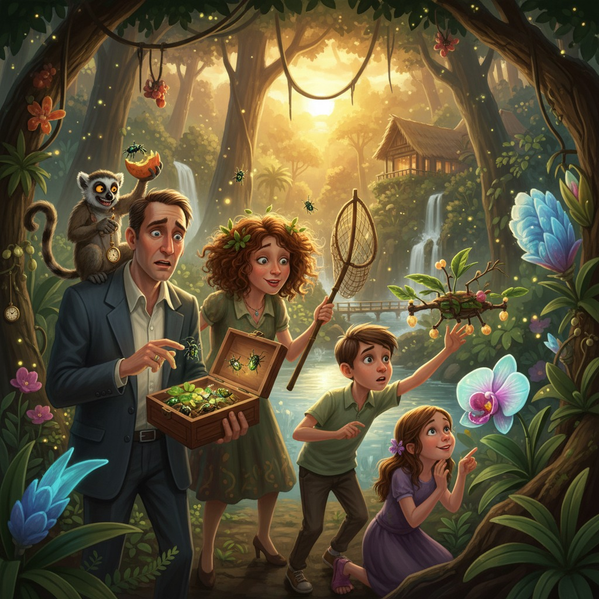

Аристарх Фисташкин-Плюш был убеждён, что у хаоса есть имя. Это имя было «Изольда».
Он любил её безмерно — с той самой педантичной, расписанной по пунктам любовью, которая выражалась в том, что он заранее распечатывал маршруты, проверял чемоданы трижды и составлял список списков. Она же любила его со стихийной силой урагана, который не смотрит на расписание и всегда прилетает не с той стороны.
Курорт «Зелёное безмолвие» в джунглях Таиланда встретил семью Фисташкиных-Плюш духотой, оркестром цикад и табличкой при въезде: «НИКАКИХ ГАДЖЕТОВ. НИКАКОЙ СВЯЗИ. ТОЛЬКО ВЫ И ПРИРОДА». Аристарх прочитал её с уважением. Оскар — с тихим ужасом. Лира — с восторгом. Чип, примотанный к рюкзаку Лиры специальной шлейкой, деловито пожевал угол таблички.
— Чудесно, — сказала Изольда, вдыхая влажный воздух полной грудью. — Я чувствую, как мой мозг уже отдыхает.
— Ты забыла мой паспорт в такси, — напомнил Аристарх.
— Он же нашёлся!
— Через сорок минут. В кармане твоего пиджака.
— Значит, всё хорошо! — Изольда лучезарно улыбнулась и потащила свою сумку в бунгало.
Именно в тот момент, когда Аристарх нёс вторую сумку — ту, что Изольда подхватила в аэропорту, — его накрыло нехорошее предчувствие. Он остановился. Посмотрел на сумку. Сумка была не его.
Точнее, она была его. Но не та, которую он собирал.
Он открыл молнию.
Внутри, в аккуратных прозрачных контейнерах с вентиляционными отверстиями, деловито шевелили усиками двадцать три представителя вида *Chrysochroa rajah* — радужные жуки-златки, каждый размером с мизинец, каждый стоимостью как подержанный автомобиль, каждый предназначенный для симпозиума в Сингапуре через десять дней.
Аристарх закрыл молнию. Открыл снова. Жуки никуда не делись.
— Изольда, — произнёс он голосом человека, который очень старается сохранять спокойствие. — Ты взяла мою рабочую сумку.
— О! — Изольда обернулась. — А где тогда моя?
— Предположительно, летит в противоположном направлении.
Пауза.
— Ну и ладно, — решила Изольда. — Отдохнём без работы. Кстати, у тебя там что-то жужжит.
---
Ночью Аристарх не спал. Он лежал под москитной сеткой и методично перебирал варианты. Позвонить — нельзя, телефоны сданы на ресепшен в специальные конверты. Выйти за периметр — теоретически возможно, но ближайший город в сорока километрах по джунглям. Отправить голубя — голубей не было. Попросить помощи у персонала — означало объяснять, что в его бунгало находится международная научная контрабанда, пусть и совершенно легальная.
Рядом безмятежно спала Изольда. С потолка свисал гамак Лиры, которая уже успела подружиться с тремя ящерицами. Оскар в соседней комнате что-то тихо шуршал — очевидно, изобретал.
Чип сидел на подоконнике и смотрел на сумку с жуками.
— Не смей, — шёпотом сказал ему Аристарх.
Лемур моргнул большими янтарными глазами и отвернулся с видом полной невинности.
Утром сумка была открыта.
---
Из двадцати трёх жуков на месте оставалось четырнадцать. Девять разлетелись — судя по траектории открытых контейнеров — в разные стороны бунгало, а оттуда, через щель в ставне, в джунгли.
Чип сидел рядом с часами Аристарха (которые он, разумеется, тоже успел стащить) и грыз их ремешок с выражением глубокого удовлетворения.
— Семейное совещание, — объявил Аристарх, не повышая голоса, потому что повышать голос в такие моменты уже не имело смысла. — Немедленно.
Они собрались за плетёным столиком на веранде. Изольда принесла кокосовый сок. Оскар уже держал в руках блокнот. Лира смотрела в сторону джунглей с задумчивым видом.
— Ситуация, — начал Аристарх. — Редкие жуки. Разбежались. Их нужно вернуть живыми за девять дней. Никакой связи с внешним миром. Вопросы?
— Они радужные? — спросила Лира.
— Да.
— Тогда они пошли к воде. Радужные вещи всегда идут к воде, чтобы отражаться.
— Это... — Аристарх открыл было рот, чтобы объяснить, что жуки не имеют эстетических предпочтений, но Изольда наступила ему на ногу под столом.
— Разумно, — сказала она. — Там ручей в пятистах метрах на юг. Я видела карту.
— Мне нужны три кокосовых скорлупы, два прутика бамбука и кусок вашей москитной сетки, папа, — деловито сообщил Оскар. — Я сделаю ловушки. Жуки летят на тепло и запах. Если положить внутрь что-то тёплое и пахнущее...
— Манго, — сказала Лира. — Они любят манго. Мне кажется.
Все посмотрели на неё.
— Я просто чувствую, — пожала она плечами.
---
Операция «Верните мне жуков» началась в полдень и немедленно столкнулась с препятствием в лице Веры Павловны — пожилой москвички, которая отдыхала в соседнем бунгало и обладала зоркостью снайпера и общительностью профессионального диктора.
— Вы куда это? — окликнула она семью, которая крадучись направлялась к ручью с набором подозрительных самодельных приспособлений.
— На прогулку! — хором ответили Фисташкины-Плюш.
— С сачком?
— Это... шляпа, — сказал Оскар, пряча конструкцию за спину.
— Очень необычная шляпа.
— Наш сын — очень необычный мальчик, — с гордостью сообщила Изольда.
Вера Павловна прищурилась, но отстала.
У ручья Лира присела на корточки и уставилась в воду. Потом подняла палец.
— Там, — сказала она, указывая на большой камень в окружении папоротников. — Двое.
— Лира, солнце моё, жуки не...
Из-под камня выполз жук. Потом второй. Оба радужно переливались на солнце.
Аристарх закрыл рот.
Оскар поймал их в ловушку с такой хирургической точностью, которая сделала бы честь его отцу.
— Осталось семь, — констатировал Аристарх, перекладывая жуков в контейнер.
— Видишь? — сказала Изольда, обнимая его за плечи. — Всё идёт по плану.
— У нас не было плана.
— Значит, всё идёт ещё лучше.
---
Следующие три дня превратились в тихую авантюру, которую семья вела с конспиративной серьёзностью секретного агентства. Оскар модернизировал ловушки, добавив к ним систему из натянутых нитей и пальмовых листьев, которая теоретически должна была направлять жуков в нужную сторону — и, к всеобщему изумлению, работала. Лира с закрытыми глазами указывала направления, и жуки неизменно оказывались именно там. Изольда, привыкшая работать с насекомыми, двигалась по джунглям бесшумно и ловко, как охотница, — чем повергала педантичного мужа в состояние нежного потрясения.
Сам Аристарх вёл полевой журнал с точностью хирургической карты: температура, влажность, состояние каждого возвращённого экземпляра. Жуки чувствовали себя хорошо. Лучше, чем он.
На четвёртый день возникло новое препятствие: управляющий курортом, молодой таец по имени Патипан, заметил, что семья ежедневно уходит в одну и ту же часть джунглей с загадочными приспособлениями.
— Вы занимаетесь медитативными практиками? — с профессиональной улыбкой поинтересовался он.
— Именно! — воскликнула Изольда.
— Традиционная хирургическая медитация, — добавил Аристарх, не моргнув глазом, и сам поразился себе.
Патипан кивнул с видом человека, который слышал всякое.
На шестой день оставался один жук.
---
Его не было нигде. Лира сидела посреди поляны и думала. Оскар перепроверял все ловушки. Изольда методично осматривала кусты. Аристарх стоял рядом и смотрел на часы — пустую руку, потому что часы по-прежнему были у Чипа.
Чип.
Аристарх медленно повернулся.
Лемур сидел на ветке и что-то внимательно разглядывал. В лапах у него было что-то блестящее. Что-то очень блестящее, переливающееся на солнце всеми цветами радуги.
— Чип, — тихо сказал Аристарх. — Отдай.
Чип прижал сокровище к груди.
— Чип. Это не твоё.
Лемур спрыгнул на другую ветку.
— Хорошо, — сказал Аристарх и полез за пазуху. Достал монету. Золотую монету — сувенир, который всегда носил с собой. Блеснул ею на солнце.
Глаза Чипа расширились.
Обмен был произведён с торжественностью дипломатического протокола: лемур аккуратно передал жука и получил монету. Сделка состоялась.
— Папа, — восхищённо выдохнул Оскар.
— Я хирург, — скромно ответил Аристарх. — Мы умеем работать в стрессовых условиях.
Изольда поцеловала его в щёку. Лира обняла Чипа. Жук переливался в контейнере, совершенно невозмутимый.
Двадцать три экземпляра. Все живы. Все в порядке.
---
В последний вечер семья сидела на веранде. Джунгли шумели. Чип дремал на плече Лиры, крепко сжимая золотую монету.
— Знаешь, — сказала Изольда, — я думаю, это был лучший отпуск в нашей жизни.
— Мы искали жуков шесть дней, — напомнил Аристарх.
— И нашли всех! Это же прекрасно.
Аристарх посмотрел на неё. Потом на детей. Потом на лемура. Потом снова на неё.
— Это была катастрофа, — сказал он. — Классическая, образцовая катастрофа с нулевой вероятностью благополучного исхода.
— И тем не менее.
— И тем не менее, — согласился он.
Оскар поднял кокосовый сок в торжественном тосте.
— За семью Фисташкиных-Плюш, — провозгласил он. — Единственных людей, которые ездят на цифровой детокс и возвращаются с двадцатью тремя редкими жуками и новыми навыками выживания.
— И с лемуром, который теперь богаче нас, — добавила Лира.
Чип приоткрыл один глаз, оценил ситуацию и снова закрыл. Золотая монета блеснула в лунном свете.
Аристарх Фисташкин-Плюш, известный хирург-трансплантолог, педант и сторонник расписания, обнял свою рассеянную, эксцентричную, совершенно невозможную жену и подумал, что никакого другого отпуска ему, пожалуй, и не нужно.
Хаос, в конце концов, тоже можно полюбить.
Особенно если он твой.
← Все рассказы